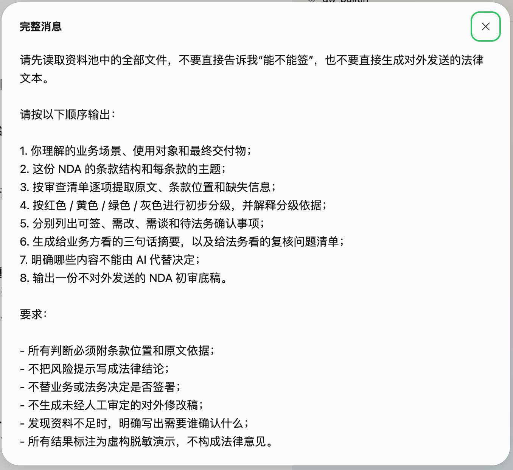
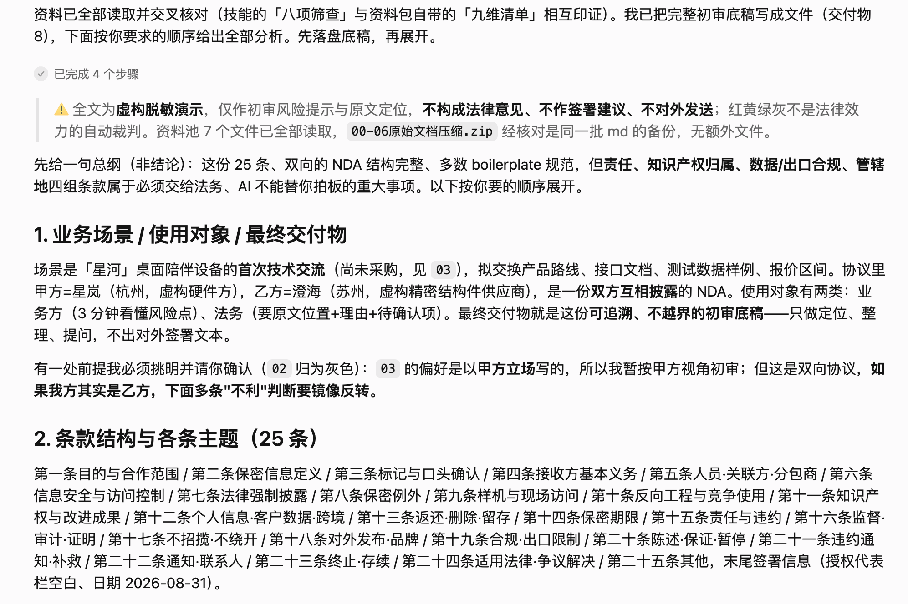
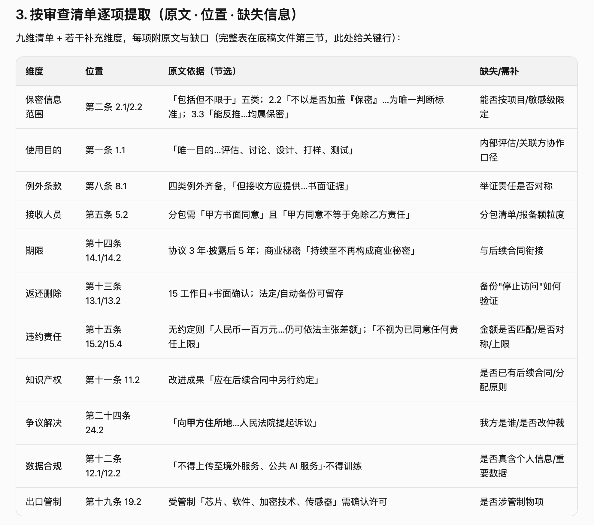
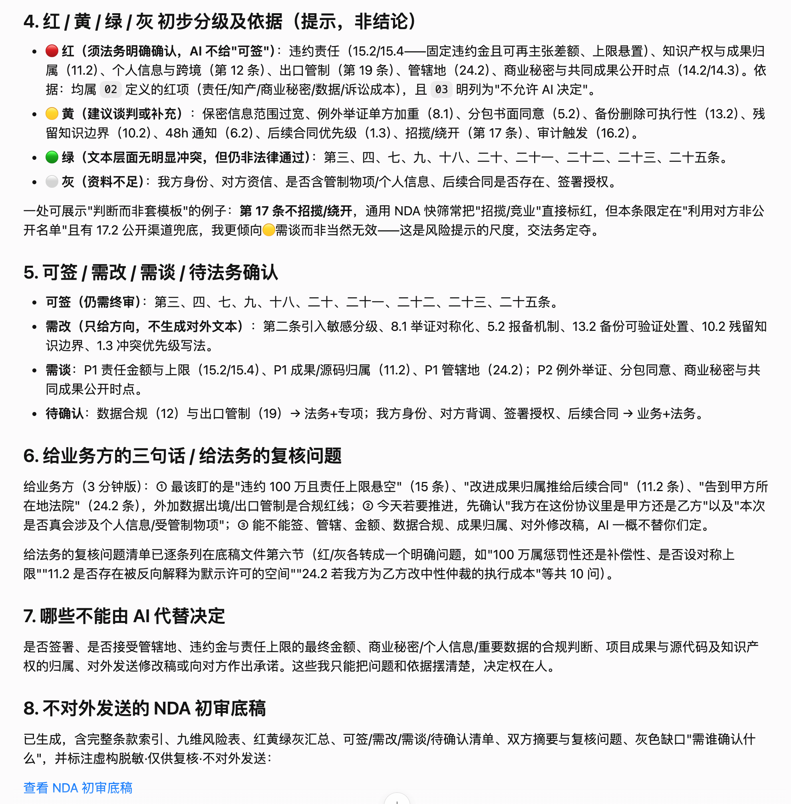
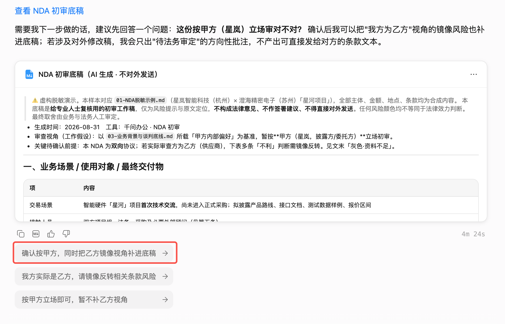
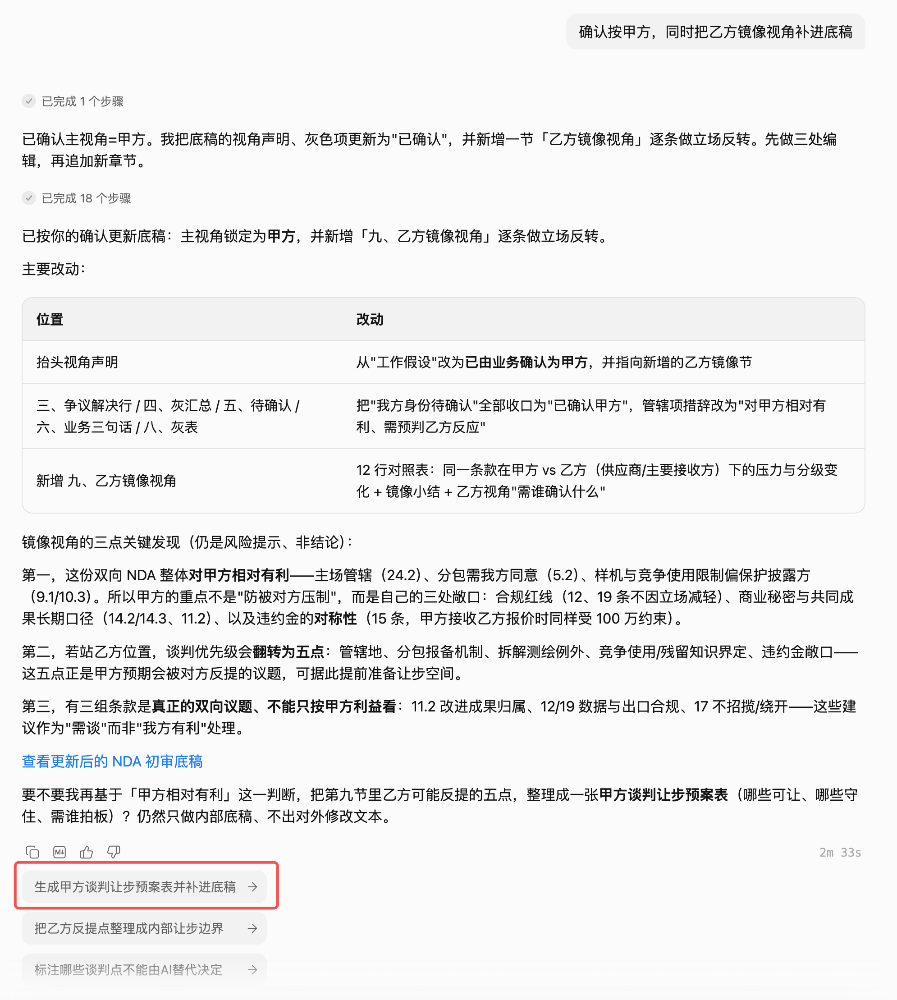
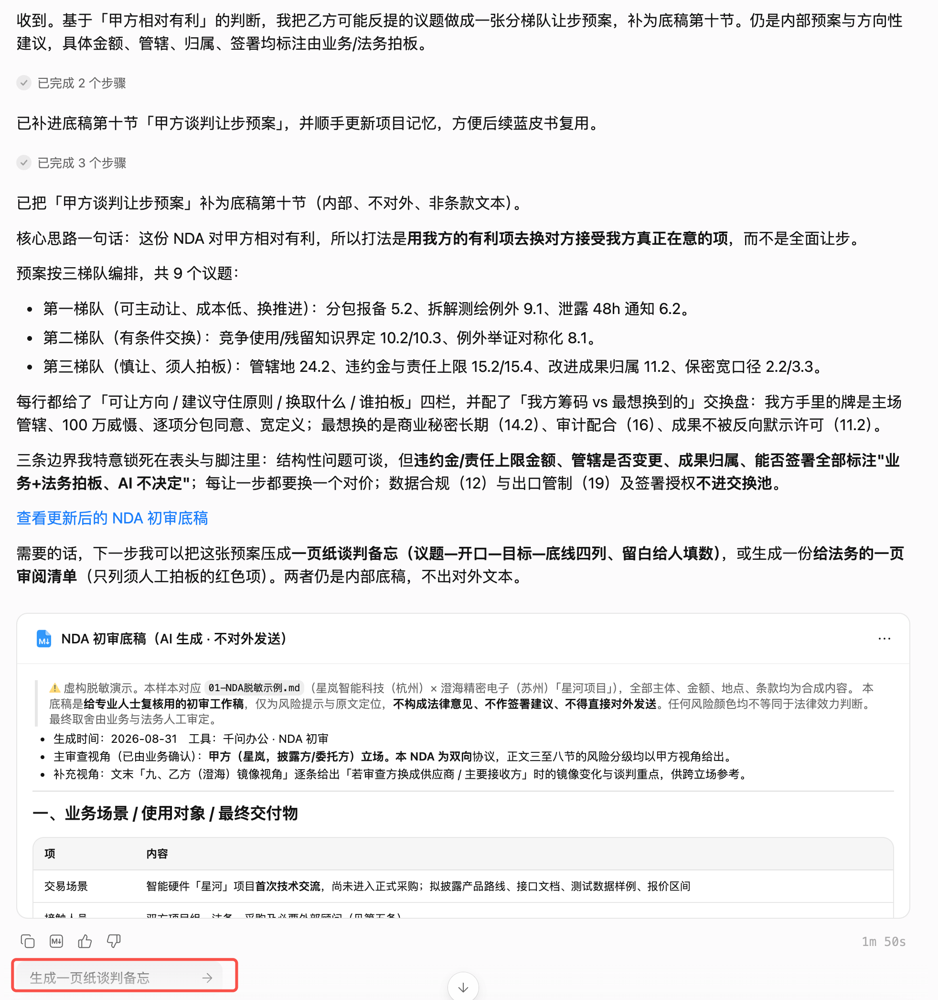
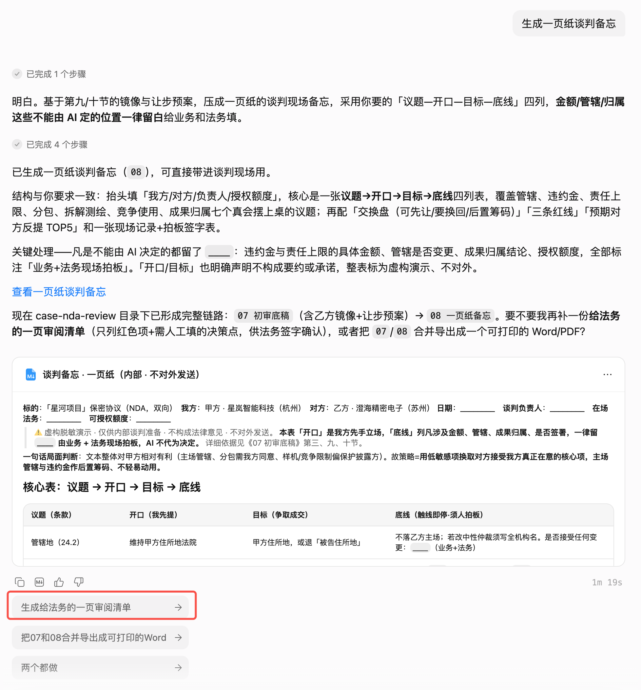
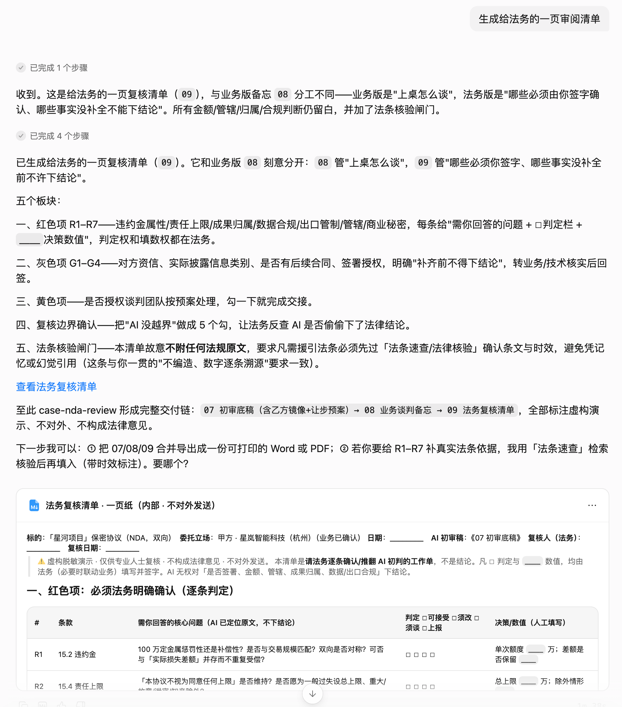

把“能不能签”拆成可追溯的判断
AI 可以帮忙定位条款、整理风险和准备问题，但最终签署意见、法律效力与谈判底线必须回到专业人士。
一份 25 条款保密协议，如何先变成法务看得懂的初审底稿？
这次任务把智能硬件品牌方与精密电子供应商的合作场景写完整：从工程图、BOM、样机和报价，到分包商、数据安全、返还删除、责任和争议解决。AI 不直接回答“能不能签”，而是把长文本拆成条款索引、风险分级、修改方向和待确认问题。
本章交付卡 · 从初审底稿到法务复核清单
第一轮先把 25 条款 NDA 变成可追溯的初审底稿，后面三轮由 AI 根据当前结果继续推进，分别形成乙方镜像视角、谈判备忘和法务复核清单。
9 张截图 · 四轮对话如何把审查继续往前推
证据 01 是第一轮任务指令；证据 02～05 是第一轮长输出的连续画面。后面三轮不是重新提问，而是沿着千问给出的推进方向继续生成内部交付：补乙方镜像视角、生成谈判让步预案、整理谈判备忘并形成法务复核清单。
{kind=link}

{kind=link}

{kind=link}

{kind=link}

{kind=link}

{kind=link}

{kind=link}

{kind=link}

{kind=link}

资料池 · 00～06 基础脱敏资料
Markdown 支持当前页阅读。协议正文是完全虚构的硬件供应链演示样本，篇幅约 25 条款，不对应任何真实主体或交易。
00 · 任务背景
定义业务场景、交付物和专业边界。当前页阅读
01 · 硬件供应链 NDA
包含工程图、BOM、样机、分包商、数据安全、责任和争议解决等条款。当前页阅读
02 · 审查清单与风险分级
规定条款维度、红黄绿灰分级和输出依据。当前页阅读
03 · 业务背景与谈判底线
让 AI 知道哪些是业务偏好，哪些不能代替决定。当前页阅读
04 · 输出模板
固定摘要、条款风险表、行动分类和法务问题。当前页阅读
05 · 验收标准
要求可追溯、不越界，并明确专业人士终审。当前页阅读
输出物 · 从初审到底稿、备忘与法务清单
这三份文件不是对外合同，也不是 AI 自动给出的签署结论，而是把不同角色下一步要做什么拆开：业务看谈判重点，法务看红色事项和事实缺口，最终决定仍由专业人士完成。
当前还没有发生的部分
法律场景里的 AI 价值，是让复核更快而不是替人签字
先把长文本变成可定位、可追问的条款清单，再由专业人士判断风险、谈判与签署。好的交付不是一个红绿灯，而是一条能回到原文、能说明依据、能留下责任人的路径。
附件 · 00～06 原始资料包
下载后可把这份硬件供应链 NDA 与审查清单一起放入千问办公，复现长文本初审底稿工作流。